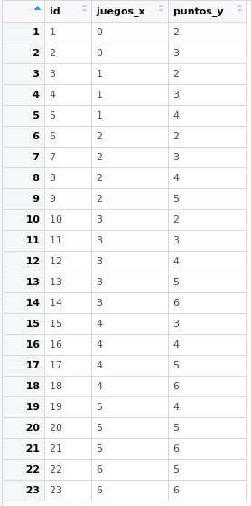

Práctica 3. Regresión simple 1
Índice
Objetivo de la práctica
En esta práctica se desarrollan ejercicios iniciales de regresión simple, que fueron presentados en la clase respectiva. El ejemplo a utilizar es del libro de Darlington & Hayes cap. 2 (The simple regression model).
Sobre hoja de código
Como vimos en la práctica anterior, al momento de analizar los datos separamos el trabajo en dos hojas de código distintas: preparacion.R (práctica 1) y analisis.R (práctica 2). Recordar nombres de archivos y directorios sin tildes, espacios ni ñEn este caso, los datos son simples y como es un ejemplo no realizaremos código de preparación, solo el correspondiente a análisis. Antes de comenzar, sugerimos crear un archivo de código en R con el nombre analisis: R: File-> New File -> RScript, o simplemente Ctrl + Shift + N.
Datos
Los datos a utilizar corresponden a un ejemplo ficticio de 23 casos (individuos) y sus datos en dos variables relacionadas con un juego (originalmente de mini-golf en el texto de referencia … pero pensemos en un ejemplo más cercano, de taca-taca). Las dos variables de esta base de datos son el número de veces que se ha jugado antes (juegos_x) y el número de goles o puntos ganados (puntos_y). El archivo de datos es tacataca.txt.
Vamos a cargar estos datos en nuestro espacio de trabajo en R dándole el nombre simple de datos Dos opciones de cargar los datos en R:
- bajarlos al computador local desde este link y luego llamarlos desde el directorio respectivo donde se guardaron:
- llamarlos directamente desde su ubicación en la web:
Como es un archivo de texto simple (txt), los cargamos con la función read.csv, para datos guardados en texto simple separados por coma. Como en el caso de nuestros datos la separación es por espacios en lugar de comas, agregamos esta información con la instrucción sep=""
Para abrirlos datos recordemos que en la lógica de R se debe generar un objeto donde se guardan los datos. Este objeto puede tener cualquier nombre, en este caso lo llamaremos simplemente “datos”.
Rutas: ¿Cómo identifico la ruta hacia mi archivo? Dos maneras:
- Botón derecho sobre el archivo -> propiedades, ahí aparece la ruta completa. Copiar y pegar donde corresponde en el archivo de R, no olvidar agregar al final el nombre completo del archivo.
- Más fácil: mouse sobre archivo, boton derecho, copiar (o ctrl+c); luego, en el archivo de R, en el lugar que corresponde dar la ruta pegar (o ctrl+v)
Verificación y descriptivos
Verificamos si los datos fueron correctamente cargados:

Tenemos entonces tres columnas:}
id: número único que identifica a cada sujetojuegos_x: número de veces que ha jugado previamentepuntos_y: numero de puntos que obtuvo en el juego actual
Generamos una tabla de descriptivos básicos con lo aprendido en la práctica de descripción de datos:
Y para publicar, usando la librería stargazer
##
## ======================================================
## Statistic N Mean St. Dev. Min Pctl(25) Pctl(75) Max
## ------------------------------------------------------
## id 23 12.000 6.782 1 6.5 17.5 23
## juegos_x 23 3.000 1.758 0 2 4 6
## puntos_y 23 4.000 1.382 2 3 5 6
## ------------------------------------------------------En la tabla vemos los estadísticos básicos de las variables juegos y puntos, y además aparece la variable id, que es el identificador y por lo tanto no tiene sentido que salga en la tabla. Para corregir, seleccionamos las variables de interés de datos con el operador pipa %>% operador pipa %>%. Este operador permite unir distintas funciones en una misma línea de código, y es muy utilizado por librerías de manejo de datos como dplyr. Por ejemplo, ahora la instrucción es “de la base de datos datos” %>% “selecciona solo las columnas juegos y puntos”:
##
## =====================================================
## Statistic N Mean St. Dev. Min Pctl(25) Pctl(75) Max
## -----------------------------------------------------
## juegos_x 23 3.000 1.758 0 2 4 6
## puntos_y 23 4.000 1.382 2 3 5 6
## -----------------------------------------------------Experiencia en juegos y puntuación
La pregunta que nos hacemos para este ejercicio de demostración es: ¿tiene relación la experiencia previa (juegos jugados previamente) con el desempeño actual (puntos obtenidos)?
Veamos un gráfico de nube de puntos / scatter de ambas variables. Para eso, primero cargamos la librería ggplotde R. Recordar que hay que instalarla primero si es que no se ha hecho previamente con install.packages("ggplot")ggplot.
 Primero, sobre librerías y visualización: lo que hicimos fue crear un objeto gráfico scatterplot
Primero, sobre librerías y visualización: lo que hicimos fue crear un objeto gráfico scatterplot g con la librería ggplot..
En términos de correlación se observa una posible asociación positiva, que podemos corroborar con la función cor:
## [1] 0.636209Tenemos una correlación positiva (dirección de la relación) y de un tamaño de efecto grande (magnitud de la relación), para ciencias sociales. Es decir, existe una asociación positiva entre ambas variables: a medida que aumenta la experiencia en juegos, aumentan también los puntos obtenidos en el partido de taca taca. Ahora bien, ¿cómo se relaciona más específcamente la experiencia en juegos con los puntos obtenidos posteriormente?
Medias condicionales
Antes de avanzar desde la correlación al método de regresión es importante conocer el concepto de media condicional.
Como sabemos el promedio de Y (puntos) es 4. Es decir, si conocemos a algún individuo que pertence al grupo de “datos”, sabemos que su puntaje se encuentra probablemente cercano a 4. ¿Podemos mejorar nuestra estimación utilizando el puntaje de X? Como lo conocemos, si el sujeto nos dice que ha jugado antes 6 veces, dada la información que conocemos probablemente vamos a estimar un puntaje superior de puntos, tal vez más cercano a 6.
Lo que estamos haciendo es utilizar la información que conocemos de X para dar una estimación de Y, que sea más precisa que el promedio bruto.

Mirando el gráfico de nube de puntos, sabemos que tres personas han jugado antes una vez, pero una de ellas tuvo 2 puntos, otra 3 y otra 4. Con estos datos podemos calcular la media de Y para X=1, que sería igual a 3. En otras palabras, la media condicional de Y cuando X=1 es 3. Con esto, uno podría calcular la media condicional para cada punto de X y hacer una estimación más precisa de Y. Sin embargo, este proceso todavía no nos permite generalizar más eficientemte la relación entre X e Y.
¿Cuántos puntos (Y) se obtienen según la experiencia previa de juego (X)? Esta pregunta nos conduce al cálculo de una recta que atraviese los puntos y que generalice la relación entre X e Y:

Residuos
En el gráfico anterior vemos que la línea resume la relación entre X e Y, pero claramente es una simplificación que no abarca toda la variabilidad de los datos.
Por ejemplo, para el sujeto cuya experiencia es haber jugado 1 vez y luego gana 3 puntos, esta línea predice exáctamente su puntaje basada en su experiencia. Sin embargo, el sujeto que ha jugado 3 veces y saca 6 puntos se encuentra más lejos de la línea y por lo tanto esta línea o “modelo predictivo” no representa tan bien su puntaje. A esto se refieren los residuos, que es la diferencia entre el valor predicho (o \(\widehat{Y}\)) y el observado \(Y\), siendo los valores predichos de Y los que pasan por la recta a la altura de cada valor de X. Por lo tanto, la mejor recta será aquella que minimice al máximo los residuos.

El sentido de la recta que resume de mejor manera la relación entre dos variables es que minimice la suma de todos los residuos. ¿Cómo realizar este procedimiento?
Para realizar la suma de los residuos estos se elevan al cuadrado, lo que se denomina Suma de residuos al cuadrado o \(SS_{residual}\). Se eleva al cuadrado ya que como hay residuos positivos y negativos, unos cancelarían a otros y la suma seía 0, tal como sucede en la formula de la varianza.
De la infinita cantidad de rectas que se pueden trazar, siempre hay una que tiene un valor menor de \(SS_{residual}\). Este procedimiento es el que da nombre al proceso de estimación: mínimos (residuos) cuadrados ordinarios, o OLS (Ordinary Least Squares).
Modelo de regresión y cálculo de parámetros
El nombre regresión hace alusión a investigaciones sobre estaturas de padres e hij_s en el S.XIX. La estatura de hij_s de padres muy altos es en promedio menor, y si sus padres son baj_s, es mayor (en comparación con sus padres). Este fenómeno se conoce como “regresión hacia el promedio”
El modelo de regresión se representa con una ecuación de la recta, o recta de regresión. Esta recta representa los valores predichos para Y según los distintos valores de X:
\[\widehat{Y}=b_{0} +b_{1}X \]
Donde
- \(\widehat{Y}\) es el valor estimado/predicho de \(Y\)
- \(b_{0}\) es el intercepto de la recta (el valor de Y cuando X es 0)
- \(b_{1}\) es el coeficiente de regresión, que nos dice cuánto aumenta Y por cada punto que aumenta X (pendiente)
Cálculo de los parámetros del modelo de regresión
\(b_{1}\), o comunmente llamado “beta de regresión” se obtiene de la siguiente manera:
\[b_{1}=\frac{Cov(XY)}{VarX}\] En términos más suntantivos se puede entender como qué parte de la covariación que hay entre X e Y se relaciona con (la varianza de) X. Especificando la fórmula:
\[b_{1}=\frac{\frac{\sum_{i=1}^{n}(x_i - \bar{x})(y_i - \bar{y})} {n-1}}{\frac{\sum_{i=1}^{n}(x_i - \bar{x})(x_i - \bar{x})} {n-1}}\] Y simplificando
\[b_{1}=\frac{\sum_{i=1}^{n}(x_i - \bar{x})(y_i - \bar{y})} {\sum_{i=1}^{n}(x_i - \bar{x})(x_i - \bar{x})}\]
Como sabemos, la base para todos estos cálculos es el valor de cada variable menos su promedio. Vamos a crear un vector en nuestra base de datos difx=\(x-\bar{x}\) y dify=\(y-\bar{y}\)
Y ahora con esto podemos obtener la diferencia de productos cruzados dif_cru=\((x-\bar{x})*(y-\bar{y})\), así como la diferencia de X de su promedio al cuadrado SSx=\((x-\bar{x})^2\)
## id juegos_x puntos_y difx dify difcru difx2
## 1 1 0 2 -3 -2 6 9
## 2 2 0 3 -3 -1 3 9
## 3 3 1 2 -2 -2 4 4
## 4 4 1 3 -2 -1 2 4
## 5 5 1 4 -2 0 0 4
## 6 6 2 2 -1 -2 2 1
## 7 7 2 3 -1 -1 1 1
## 8 8 2 4 -1 0 0 1
## 9 9 2 5 -1 1 -1 1
## 10 10 3 2 0 -2 0 0
## 11 11 3 3 0 -1 0 0
## 12 12 3 4 0 0 0 0
## 13 13 3 5 0 1 0 0
## 14 14 3 6 0 2 0 0
## 15 15 4 3 1 -1 -1 1
## 16 16 4 4 1 0 0 1
## 17 17 4 5 1 1 1 1
## 18 18 4 6 1 2 2 1
## 19 19 5 4 2 0 0 4
## 20 20 5 5 2 1 2 4
## 21 21 5 6 2 2 4 4
## 22 22 6 5 3 1 3 9
## 23 23 6 6 3 2 6 9Y con esto podemos obtener la suma de productos cruzados y la suma de cuadrados de X
## [1] 34## [1] 68Reemplazando en la fórmula
\[b_{1}=\frac{\sum_{i=1}^{n}(x_i - \bar{x})(y_i - \bar{y})} {\sum_{i=1}^{n}(x_i - \bar{x})(x_i - \bar{x})}=\frac{34}{68}=0.5\]
Y con esto podemos obtener el valor de \(b_{0}\)
\[b_{0}=\bar{Y}-b_{1}\bar{X}\] \[b_{0}=4-(3 * 0.5)=2.5\]
Completando la ecuación:
\[\bar{Y}=2.5+0.5X\]
Esto nos permite estimar el valor de \(Y\) (o su media condicional) basado en el puntaje \(X\). Por ejemplo, cuál es el valor estimado de \(Y\) dado \(X=5\)?
Estimación del modelo de regresión simple en R
La función para estimar regresión en R es lm (linear model). Su forma general es:
objeto=lm(dependiente ~ independiente, data=datos)Donde
- objeto: el nombre (cualquiera) que le damos al objeto donde se guardan los resultados de la estimación
- dependiente / independiente: los nombres de las variables en los datos
- data = el nombre del objeto de nuestros datos en R
Ejemplo con los datos de taca taca:
Con esta operación ya estimamos nuestra primera regresión simple. Para ver la estimación de los parámetros principales (intercepto y pendiente) simplemente ejecutamos el nombre del objeto:
##
## Call:
## lm(formula = puntos_y ~ juegos_x, data = datos)
##
## Coefficients:
## (Intercept) juegos_x
## 2.5 0.5Y obtenemos los valores que calculamos previamente.
Podemos tener un output en un formato más apropiado utilizando la librería stargazer
##
## ===============================================
## Dependent variable:
## ---------------------------
## puntos_y
## -----------------------------------------------
## juegos_x 0.500***
## (0.132)
##
## Constant 2.500***
## (0.458)
##
## -----------------------------------------------
## Observations 23
## R2 0.405
## Adjusted R2 0.376
## Residual Std. Error 1.091 (df = 21)
## F Statistic 14.280*** (df = 1; 21)
## ===============================================
## Note: *p<0.1; **p<0.05; ***p<0.01Vemos que en la tabla aparecen una serie de elementos adicionales, además de \(b_{1}\) (juegos) y el intercepto o constante (“Constant”). Esto será tema de la siguiente sesión.
Reporte de progreso
Completar el reporte de progreso correspondiente a esta práctica aquí
Archivo de código
El archivo de código R de esta práctica se puede descargar aquí